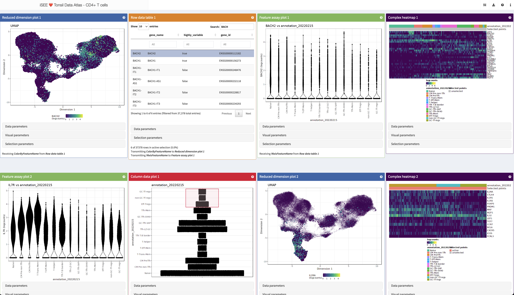
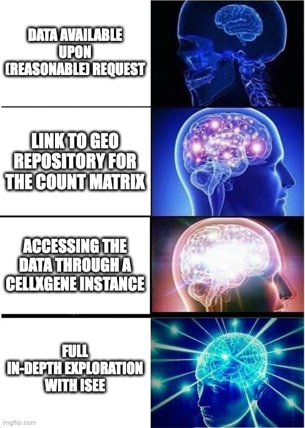

iUSEiSEE - The iSEE package for efficient, interactive, and reproducible exploration of data
Federico
Marini1,
Najla Abassi2
Collection of material developed by the iSEE core dev team
(Kevin
Rue-Albrecht, Federico Marini, Charlotte Soneson, Aaron Lun)
Source: vignettes/iUSEiSEE_01.Rmd
iUSEiSEE_01.Rmd
iUSEiSEE: a masterclass-level workshop on iSEE
The iSEE package (Rue-Albrecht et al. 2018) is a flexible, powerful and extendible application to explore any dataset stored in SummarizedExperiment objects, including single cell and spatially resolved data.
This workshop and associated workshop package contain all the materials you might need to have a full experience and learn how to use iSEE, hands on, starting from the basics and making your way up to the more advanced features.
This vignette contains a compact version of the more extended material of all other detailed vignettes. Feel free to use this as a compact index for the rest!
In brief, you will…
- Install all required packages and software
- Go get some data
- See how easy it is to run
iSEE - Obtain a quick overview of the panels and the user interface
- Get to know the more advanced features of
iSEE - Be able to use
iSEEon your own data (and maybe even deploy that!)
Ready? Let’s go!
Installing and loading the required packages
To run the content presented in this demo, run this following chunk in your R environment.
library("BiocManager")
BiocManager::install("imbeimainz/iUSEiSEE", dependencies = TRUE, build_vignettes = TRUE)We start by loading the packages that will be used during the demo.
library("SingleCellExperiment")
library("iSEE")
library("TENxPBMCData")
library("iSEEu")
library("iSEEde")
library("iSEEpathways")
library("iSEEhub")
library("iSEEindex")All of these would be loaded if you run
You can also clone this repository (https://imbeimainz.github.io/iUSEiSEE) locally by
git clone - it makes it easy to follow along this
vignette!
Let’s go get us some data!
We will start very much in medias res, assuming that this might be the ideal point where you have processed your data - early or late phase - and now want to have the BEST look at that.
Navigate to https://zenodo.org/records/10084595 and download the
data (it contains the three objects you might be “coming from”).
Unpack the archive you downloaded in the datasets subfolder
of the vignette folder.
We included a SingleCellExperiment object on a processed
version for the PBMC3k dataset, many of you can somehow be familiar with
this.
Let’s load the dataset in our environment:
sce_pbmc3k <- readRDS(
file = system.file("datasets", "sce_pbmc3k.RDS", package = "iUSEiSEE")
)
sce_pbmc3k
#> class: SingleCellExperiment
#> dim: 32738 2643
#> metadata(0):
#> assays(2): counts logcounts
#> rownames(32738): MIR1302-10 FAM138A ... AC002321.2 AC002321.1
#> rowData names(19): ENSEMBL_ID Symbol_TENx ... FDR_cluster11
#> FDR_cluster12
#> colnames(2643): Cell1 Cell2 ... Cell2699 Cell2700
#> colData names(24): Sample Barcode ... labels_ont cell_ontology_labels
#> reducedDimNames(3): PCA TSNE UMAP
#> mainExpName: NULL
#> altExpNames(0):As easy as saying iSEE(sce)!
Who of you is investing a fair amount/lot of time in doing proper data exploration?
Who of you is familiar with the beautiful CELLxGENE tool?
Who of you dreamed to do even more on your data?
I have a quiz for you - have a look at this, for example:
http://shiny.imbei.uni-mainz.de:3838/iSEE_Tonsils_CD4Tcells/

Question 1
How many lines of code are required to realize this?
- 4-5
- 250-300
- 7500-10000
Question 2
How many of these lines had to be typed by a human?
- 4-5
- 250-300
- 7500-10000
So, yes, I will show you that is as easy as that:
Let’s run this together and see what we have got in store.

iSEE, “tl;dr”
Quick tour of the panels
What typical visualizations people would you use to represent and explore your datasets?
Each panel has some essential content:
- Data parameters
- Visual parameters
- Selection parameters
Let’s have a closer look at that on the Reduced Dimension Plot 1 panel.
If you have no idea of what a panel can “normally” do, look for the question mark icon, that will start a tiny tour on its functionality.
Additional UI functionality
iSEE also has some additional controls, grouped into the header bar, let’s have a look at them:
- Organization buttons
- Export buttons
- Documentation buttons
- Extra info buttons
With this, we can…
- reorganize the panel layout - add, remove, re-order
- extract the code to exactly reproduce the outputs, 1:1
- store (and re-utilize) the panel settings
- generate at once an archive with all/selected parts of the panel outputs
- start a tour on the content displayed - yes, you can very much tell a story with iSEE!
In depth exploration of data - iSEE’s main functionality
You can control pretty much everything in a plot
Coloring by, faceting, zooming, hovering!
Make a wish!
You can link any panel to any other panel
Brush selection, lasso selection, select the receiving panel,
iterate!
Read out information, see the panel transmission graph.
Configuring your iSEE instance
Panels: add, move, remove; exporting the initial
configuration, reloading it
Custom panels & the iSEE universe
A couple of additional things you can do with custom panels (and this is just an appetizer!):
- Custom panels: perform some extra steps
- Multiple selection and “DE on the fly”
- Check out iSEEu for more
- Spatial data? We can already handle that with a workaround! See https://moffittlab.connect.hms.harvard.edu/merfish/merfish_homepage.html for an example
Got data?
Got single cell data?
You might have got the gist:
So, yes, we mighe be down to THREE lines of code.
Got some special feature in your data?
Maybe iSEEu can be the place to find already that piece of functionality!
Got bulk?
Have a look at the functionality provided by
These can be ideal companions for exploring DE results.
iSEEde and
iSEEpathways
are two new Bioconductor packages that provide iSEE panels
specifically aimed towards exploration of differential expression and
pathway analysis results. More precisely, iSEEde
provides the VolcanoPlot, MAPlot,
LogFCLogFCPlot and DETable panels.
Got many datasets?
Have a look at the functionality provided by
The iSEEhub package provides a custom landing page for an iSEE application interfacing with the Bioconductor ExperimentHub. The landing page allows users to browse the ExperimentHub, select a data set, download and cache it, and import it directly into an iSEE app.
iSEEindex
provides an interface to any collection of data sets
within a single iSEE web-application.
The main functionality of this package is to define a custom landing
page allowing app maintainers to list a custom collection of data sets
that users can select from and directly load objects into an iSEE web
application.
One iSEE instance to
ruleexlore them all…
A more elaborate example is available at https://rehwinkellab.shinyapps.io/ifnresource/. The source can be found at https://github.com/kevinrue/IFNresource.
Potential use cases can include:
- An app to present and explore the different datasets in your next publication
- An app to explore collection of datasets collaboratively, in consortium-like initiatives
- An app to mirror and enhance the content of e.g. the CellxGene data portal
- Got any ideas on how to use iSEE for such deployments?
Interoperability
“Wait, I got Seurat/Anndata objects”.
The single cell communities got you covered:
From Seurat…
library("Seurat")
seurat_object <- readRDS("datasets/seurat_pbmc3k.RDS")
sce_from_seurat <- Seurat::as.SingleCellExperiment(
seurat_object
)
sce_from_seurat
iSEE(sce_from_seurat)From AnnData…
… which is basically able to serve any dataset available throught the CELLxGENE Data Portal!
library("zellkonverter")
sce_from_anndata <- zellkonverter::readH5AD(file = "datasets/anndata_pbmc3k.h5ad")
sce_from_anndata
iSEE(sce_from_anndata)An example could be…
https://cellxgene.cziscience.com/e/c7856243-c59a-4b70-8ce7-25b94c2d9da1.cxg/
Session info
sessionInfo()
#> R version 4.4.0 (2024-04-24)
#> Platform: x86_64-apple-darwin20
#> Running under: macOS Monterey 12.7.1
#>
#> Matrix products: default
#> BLAS: /Library/Frameworks/R.framework/Versions/4.4-x86_64/Resources/lib/libRblas.0.dylib
#> LAPACK: /Library/Frameworks/R.framework/Versions/4.4-x86_64/Resources/lib/libRlapack.dylib; LAPACK version 3.12.0
#>
#> locale:
#> [1] en_US.UTF-8/en_US.UTF-8/en_US.UTF-8/C/en_US.UTF-8/en_US.UTF-8
#>
#> time zone: Europe/Berlin
#> tzcode source: internal
#>
#> attached base packages:
#> [1] stats4 stats graphics grDevices utils datasets methods
#> [8] base
#>
#> other attached packages:
#> [1] iUSEiSEE_1.0.0 iSEEindex_1.2.0
#> [3] iSEEhub_1.6.0 ExperimentHub_2.12.0
#> [5] AnnotationHub_3.12.0 BiocFileCache_2.12.0
#> [7] dbplyr_2.5.0 iSEEpathways_1.2.0
#> [9] iSEEde_1.2.0 iSEEu_1.15.1
#> [11] iSEEhex_1.5.0 TENxPBMCData_1.21.0
#> [13] HDF5Array_1.32.0 rhdf5_2.48.0
#> [15] DelayedArray_0.30.0 SparseArray_1.4.0
#> [17] S4Arrays_1.4.0 abind_1.4-5
#> [19] Matrix_1.7-0 iSEE_2.15.1
#> [21] SingleCellExperiment_1.26.0 SummarizedExperiment_1.33.3
#> [23] Biobase_2.64.0 GenomicRanges_1.55.4
#> [25] GenomeInfoDb_1.40.0 IRanges_2.38.0
#> [27] S4Vectors_0.42.0 BiocGenerics_0.50.0
#> [29] MatrixGenerics_1.16.0 matrixStats_1.3.0
#> [31] BiocStyle_2.32.0
#>
#> loaded via a namespace (and not attached):
#> [1] splines_4.4.0 later_1.3.2
#> [3] bitops_1.0-7 urltools_1.7.3
#> [5] filelock_1.0.3 tibble_3.2.1
#> [7] triebeard_0.4.1 lifecycle_1.0.4
#> [9] edgeR_4.2.0 doParallel_1.0.17
#> [11] lattice_0.22-6 magrittr_2.0.3
#> [13] limma_3.60.0 sass_0.4.9
#> [15] rmarkdown_2.26 jquerylib_0.1.4
#> [17] yaml_2.3.8 httpuv_1.6.15
#> [19] DBI_1.2.2 RColorBrewer_1.1-3
#> [21] zlibbioc_1.50.0 purrr_1.0.2
#> [23] RCurl_1.98-1.14 rappdirs_0.3.3
#> [25] circlize_0.4.16 GenomeInfoDbData_1.2.12
#> [27] ggrepel_0.9.5 irlba_2.3.5.1
#> [29] pkgdown_2.0.9 DelayedMatrixStats_1.26.0
#> [31] codetools_0.2-20 DT_0.33
#> [33] scuttle_1.14.0 tidyselect_1.2.1
#> [35] shape_1.4.6.1 UCSC.utils_1.0.0
#> [37] viridis_0.6.5 ScaledMatrix_1.12.0
#> [39] shinyWidgets_0.8.6 jsonlite_1.8.8
#> [41] GetoptLong_1.0.5 BiocNeighbors_1.22.0
#> [43] scater_1.32.0 iterators_1.0.14
#> [45] systemfonts_1.0.6 foreach_1.5.2
#> [47] tools_4.4.0 ragg_1.3.0
#> [49] Rcpp_1.0.12 glue_1.7.0
#> [51] gridExtra_2.3 xfun_0.43
#> [53] mgcv_1.9-1 DESeq2_1.44.0
#> [55] dplyr_1.1.4 shinydashboard_0.7.2
#> [57] BiocManager_1.30.22 fastmap_1.1.1
#> [59] rhdf5filters_1.16.0 fansi_1.0.6
#> [61] shinyjs_2.1.0 digest_0.6.35
#> [63] rsvd_1.0.5 R6_2.5.1
#> [65] mime_0.12 textshaping_0.3.7
#> [67] colorspace_2.1-0 listviewer_4.0.0
#> [69] RSQLite_2.3.6 paws.storage_0.5.0
#> [71] utf8_1.2.4 generics_0.1.3
#> [73] hexbin_1.28.3 httr_1.4.7
#> [75] htmlwidgets_1.6.4 pkgconfig_2.0.3
#> [77] gtable_0.3.5 blob_1.2.4
#> [79] ComplexHeatmap_2.20.0 XVector_0.44.0
#> [81] htmltools_0.5.8.1 rintrojs_0.3.4
#> [83] clue_0.3-65 scales_1.3.0
#> [85] png_0.1-8 knitr_1.46
#> [87] rstudioapi_0.16.0 rjson_0.2.21
#> [89] nlme_3.1-164 curl_5.2.1
#> [91] shinyAce_0.4.2 cachem_1.0.8
#> [93] GlobalOptions_0.1.2 stringr_1.5.1
#> [95] BiocVersion_3.19.1 parallel_4.4.0
#> [97] miniUI_0.1.1.1 vipor_0.4.7
#> [99] AnnotationDbi_1.65.2 desc_1.4.3
#> [101] pillar_1.9.0 grid_4.4.0
#> [103] vctrs_0.6.5 promises_1.3.0
#> [105] BiocSingular_1.20.0 beachmat_2.20.0
#> [107] xtable_1.8-4 cluster_2.1.6
#> [109] beeswarm_0.4.0 evaluate_0.23
#> [111] cli_3.6.2 locfit_1.5-9.9
#> [113] compiler_4.4.0 rlang_1.1.3
#> [115] crayon_1.5.2 paws.common_0.7.2
#> [117] fs_1.6.4 ggbeeswarm_0.7.2
#> [119] stringi_1.8.3 viridisLite_0.4.2
#> [121] BiocParallel_1.38.0 munsell_0.5.1
#> [123] Biostrings_2.72.0 colourpicker_1.3.0
#> [125] sparseMatrixStats_1.16.0 bit64_4.0.5
#> [127] ggplot2_3.5.1 Rhdf5lib_1.26.0
#> [129] KEGGREST_1.44.0 statmod_1.5.0
#> [131] shiny_1.8.1.1 highr_0.10
#> [133] igraph_2.0.3 memoise_2.0.1
#> [135] bslib_0.7.0 bit_4.0.5